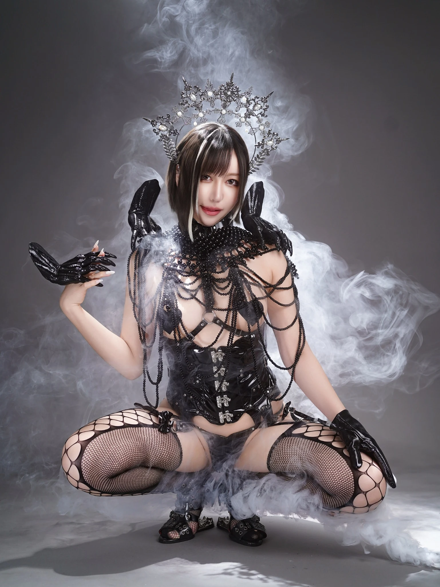

Cosplayer · Gravure · Anison DJ
黒跪カレン
Kuroki Karen✧
コスプレ・グラビア・アニソンDJとして活動。
サキュバスシーシャグループ 総合プロデューサー。
SCROLL TO DISCOVER
ABOUT
黒跪カレンについて
コスプレ・グラビア
アニソンDJ
コスプレイヤー・グラビアモデル・アニソンDJとして、国内外で活動しています。
撮影・DJ出演のほか、イベント企画や制作、ブッキングなどを行っています。
サキュバスシーシャグループの総合プロデューサーとして、グループおよび系列店の新規立ち上げに携わっています。事業企画書の作成、店舗コンセプト設計、内装・衣装デザイン、各種ディレクションなどを担当しています。
LINKS
公式SNS
最新の出演予定や活動情報はこちらから。
FAN CLUB
ファンクラブ
限定写真や動画、SNS未公開作品など。お好きなサービスからお楽しみください。
SHOP
通販・ダウンロード作品
写真集・同人作品・デジタルコンテンツなど。
SUPPORT
応援・ほしい物リスト
Thank you for
your support.
衣装・撮影・作品制作・イベントなどの活動に使用させていただきます。衣装系のプレゼントにはお礼の写真をお送りします。いつもありがとうございます。
BOOKING
出演・制作・お仕事のご依頼
DJ・撮影・出演・企画制作などのご相談を受け付けています。
ご依頼内容に合わせて各項目をご覧ください。
詳細条件はタップすると開きます。
A /企業・タレント・撮影会出演
コンパニオン、モデル、MC、グラビア、イベントプロデュースなど
- お問い合わせ窓口
- XのDM、またはメール
- 撮影会の報酬条件
- 基本的に、手取り額がバック率70％以下となる案件はお断りしております。
その他もお気軽にご相談ください。
B /DJ・パフォーマンス関連
DJ、パーティーガール、イベントプロデュース、ブッキングなど
- DJ出演
- 10,000円〜＋交通費
- テキーラガール / パーティーガール
- 固定10,000円〜＋販売バック
- イベントプロデュース / ブッキング
- 内容・規模・拘束時間により応相談
イベント規模、拘束時間、遠征の有無などにより料金は別途ご相談可能です。お問い合わせ窓口：XのDM。
C /撮影・クリエイティブ・個人依頼
個人撮影、デザイン、ROM表紙制作、イラスト制作、同人イベント売り子など
- 個人リクエスト撮影｜私服などの屋外撮影
- 1時間 10,000円
- 個人リクエスト撮影｜セクシー衣装の室内撮影
- 1時間 15,000円前後
- 動画撮影オプション
- ＋5,000円 / 1時間
- 同人イベントの売り子
- 基本15,000円〜＋往復交通費
- ROM表紙制作
- 5,000円〜
- カラーイラスト制作
- 背景なし・キャラクター単体 10,000円〜
個人撮影の重要事項
- ヌード撮影はお受けしておりません。
- 撮影データの無断販売・無断掲載は禁止です。
- 掲載時はレタッチおよび事前確認が必須です。
- スタジオ代はご依頼者様のご負担となります。
- 撮影内容・衣装・場所によってはお受けできない場合があります。
ROM表紙制作はリテイク1回まで、納期は2週間〜1か月程度です。商用利用の場合は内容により料金が変動します。その他詳細はXのDMにてご相談ください。
D /ご依頼時にご記載いただきたい内容
- 案件名・イベント名
- 開催日または希望日時
- 会場・撮影場所・地域
- 出演時間・撮影時間・拘束時間
- 依頼内容
- 出演料・ご予算
- 交通費・宿泊費の条件
- 撮影内容・衣装
- 撮影データの掲載・使用範囲
- ご担当者様名
- ご連絡先
CONTACT · kurokikaren000@gmail.com
WORKS
主な活動実績
ジャンルごとに過去の実績をご覧いただけます。
Selected
Works.
出演・制作・イベント企画、店舗プロデュースなどの活動実績。
TV・配信番組03
- Tokyo MX「エスエス」商品紹介コーナー レギュラー出演
- Tokyo MX「エスエス」年明けカウントダウン エキストラ出演
- FRESH!「うにいかTV」メインMC・冠番組出演
雑誌・広告04
- 「実話ナックルズGOLD」3月号 グラビア掲載
- dazzystore 歌舞伎町ハロウィン ドレス衣装広告モデル
- 「月刊コミックZERO-SUM」裏表紙 コスプレ掲載
- 「2025コスホリックSPECIAL」Fantia広告モデル掲載
グラビア・映像作品03
- DMMDL VR「Apartment Days! act1 黒跪カレン」出演
- DMMDL VR「Apartment Days! act2 黒跪カレン」出演
- NIKKE C105公式動画 ラピ役出演
イベントコンパニオン02
- イギリス「HYPER JAPAN 2019」日本代表コスプレイヤー
- シャドウバース アルテマ杯 コンパニオン／アルビダ役
音楽・CD01
- PariPismオリジナル楽曲「TEEN☆POP」メインボーカル（楽曲制作：まろん / IOSYS）
コンテスト03
- TENGA ハロウィンコスプレコンテスト 優勝
- アニクラJAM 第2回コスプレコンテスト 優勝
- COSCREAM 2019 コスプレコンテスト 準優勝
DJ・イベント・同人活動12
- TENGA × 原宿ビットシアター トークショー ゲスト出演
- 歌舞伎町「PariPism」レギュラー出演（2016〜2018）
- 肉フェス TOKYO 2017 WONDERLAND 出演
- 夏の宴・冬の宴 出演
- 泡パ GIRLS SUMMER（club asia）出演
- アニクラTMA 出演
- 2024 夏の宴 BLACK STAGE DJ出演
- 「ガヴリールドロップアウト」原作者・うかみ先生スペースにて売り子
- 東方サークル「冷女又」るなてぃっく先生スペースにて売り子
- マカオ「IF同人文化祭15」DJ出演
- 肉フェス2025 やぐらステージ DJ出演
- シンガポール「Costica Indies+ 2025」DJ出演
ブランド・店舗・プロデュース04
- AngelShisha WINGS 店長
- 持ち運びシーシャ「SLASH」公式アンバサダー
- サキュバスシーシャグループ 総合プロデューサー（グループ・系列店の新規立ち上げ、コンセプト設計、内装・衣装デザイン、各種ディレクション）
- 六本木バーレスク主催「#ヤバイがすぎる」イベントプロデュース・ブッキング担当
主催イベント03
- 女音
- アニマッド
- GeekBash
✧
KUROKI KAREN — OFFICIAL WEBSITE